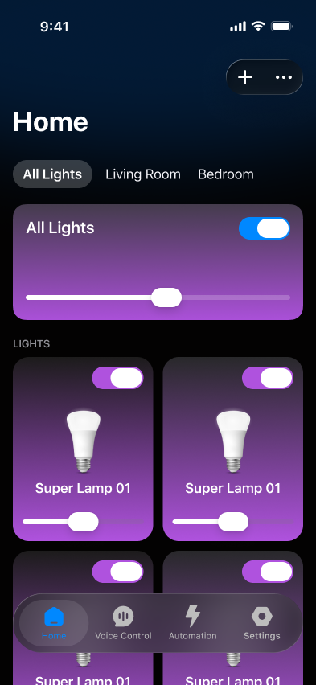
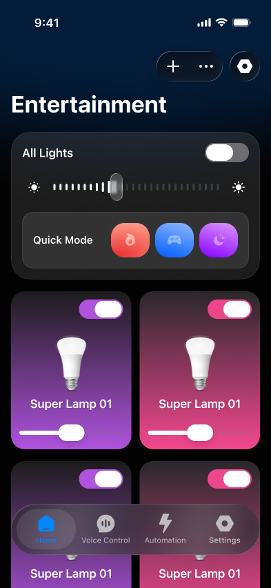
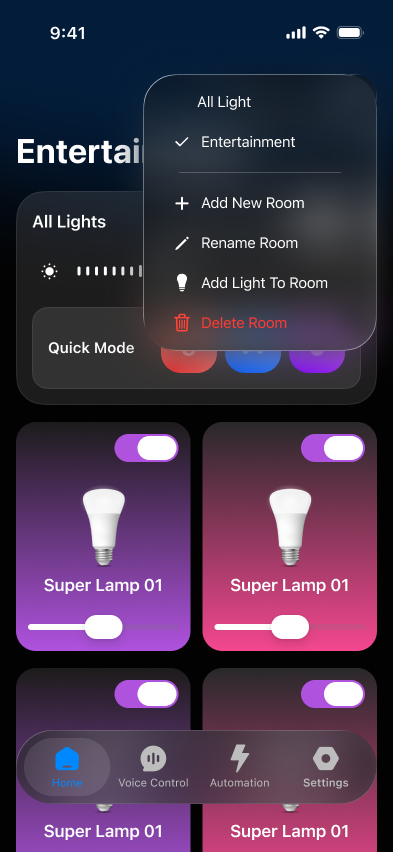

01 · The first signal
Home was not prioritising everyday behaviour
- Behaviour signal: Changing colour was the most-used Home control, ahead of on/off and brightness.
- Feedback signal: App Store feedback requested changing the colour of several lights at once.
- Room context: Room was visible directly on Home but was created and opened less often.
Content image placeholderRedacted GA4 breakdown of colour, on/off and brightness actions on the original Home.
Colour adjustment was the most-used light-control action.
Content image placeholderRedacted App Store feedback about changing several lights’ colour together.
Redacted feedback excerpt about changing several lights’ colour together.
02 · The initial decision
Bring multi-light colour control forward
- Added: Quick Mode let users change the colour of all lights at once.
- Moved: Room went into More options to make Home cleaner and create space for the new control.
- Not removed: Room remained available throughout the test.
Tested changeQuick Mode was added while Room moved into More options. These changes were tested together.
Home

Home

Change or add room

03 · What the test revealed
The combined variant showed a trade-off
- Quick Mode use: It accounted for 64% of recorded Home actions during the one-month test.
- Variant result: D1 retention was 9.6% versus 12% in baseline; the Home-banner in-app purchase rate decreased by 1.4 percentage points during the test.
- Room cohort: Room creators had higher W1 retention (19.4% vs 9.4%) and returned to use every measured core Home control more often.
- Interpretation: The test combined Quick Mode and Room placement, so it did not isolate either change. Low Room frequency alone was not enough evidence to hide it.
Quick Mode usage64%Of recorded Home actions during the test
D1 retention9.6%Variant A · 12% in baseline
W1 retention · Room-creator cohort19.4%vs 9.4% without a Room in the first 24h
| Variant | D1 retention rate | % difference from baseline |
|---|---|---|
| ✓Baseline235 users | 12% | Baseline |
| ✓Variant A228 users | 9.6% | -19% |
Observed D1 retention in the one-month test. The variant combined Quick Mode and a less visible Room entry; it does not isolate the effect of either change.
| Core control | Baseline | Variant A | Relative change |
|---|---|---|---|
| All-lights on/off | 14% | 12% | −18% |
| All-lights brightness | 12% | 11% | −8% |
| Single-light brightness | 8.9% | 8.3% | −6.7% |
| Single-light on/off | 13% | 13% | −3.6% |
Key-event rates are rounded for display. The observed pattern was directionally lower across all four tracked controls, but was not statistically conclusive.
04 · The correction
Restore Room before introducing Quick Mode
- Recovery release: Room returned to a visible position on Home; Quick Mode was deferred to a later release.
- Observed result: D1 retention returned to slightly above the 12% baseline.
- Boundary: This supports keeping Room visible but does not prove that Room placement alone caused recovery.
Content image placeholderRecovery Home: Room restored directly on Home; Quick Mode deferred.
Content image placeholderRedacted retention trend after Room was restored in the recovery version. Quick Mode was deferred.
D1 retention returned to slightly above the 12% baseline after Room was restored. Exact values remain pending.
05 · Closing
Frequency alone is not a prioritisation rule
- Use frequency: Quick Mode showed strong use within the test.
- Returning behaviour: Room creators returned to use every measured core Home control more often and showed higher W1 retention.
- Decision: Restore Room on Home and defer Quick Mode, rather than hide Room based on low frequency alone.